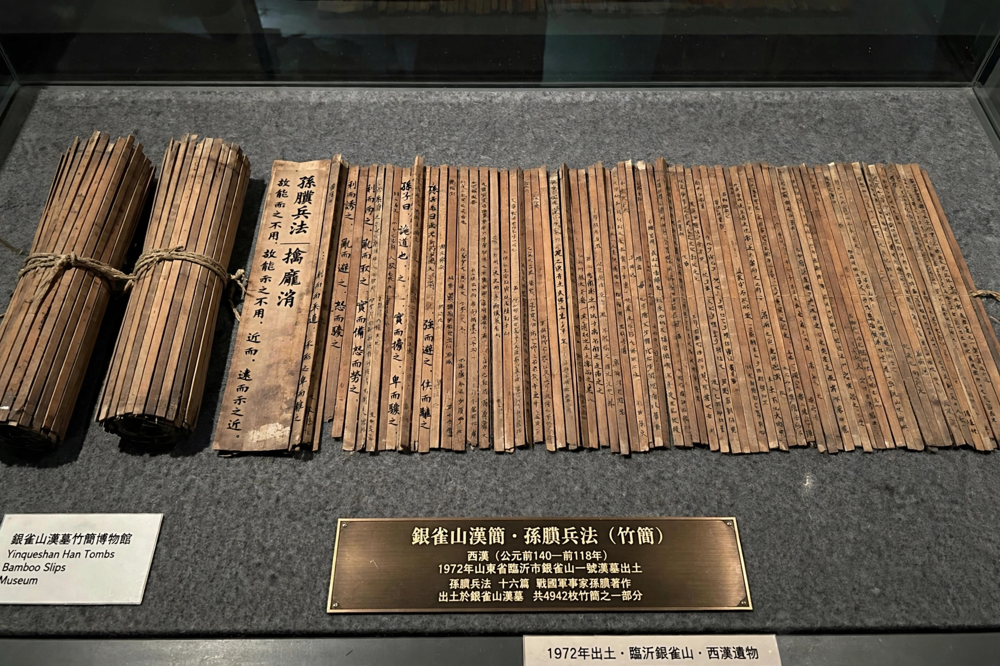

| Sun Bin | |
|---|---|
| Born | died 316 BC; active 4th century BC |
| Allegiance | State of Qi |
| Known for | Sun Bin's Art of War; victories at Guiling and Maling |
Sun Bin (died 316 BC) was a Chinese general, military strategist and writer active during the Warring States period. A reputed descendant of Sun Tzu, author of The Art of War, Sun Bin served as chief military adviser to the State of Qi and authored his own treatise, Sun Bin's Art of War, lost for centuries and rediscovered in 1972.

According to Sima Qian's Records of the Grand Historian, Sun Bin studied strategy alongside Pang Juan, who became a general of Wei and, jealous of Sun Bin's talent, had him framed for treason. Sun Bin was punished by having his kneecaps removed — the name Bin refers to this mutilation — and tattooed. He escaped to Qi with help from an envoy, famously feigning madness.
At the Battle of Guiling (353 BC), Sun Bin advised attacking the Wei capital to force Pang Juan to lift the siege of Handan, defeating the returning Wei forces in ambush — origin of the stratagem "besiege Wei to rescue Zhao." At Maling (342 BC) he feigned retreat, reducing cooking stoves daily to lure Pang Juan into a narrow pass where Qi crossbowmen ambushed Wei; Pang Juan killed himself.
Sun Bin's Art of War, recovered from Yinqueshan Han tombs alongside Sun Tzu's text, confirmed Sun Bin was a distinct author. His stratagems remain classics of Chinese military thought.